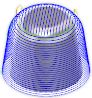

<div id="shallowStrategy"><p>緩斜面領域で平行パスとスキャロップ パスのどちらを使用するかを指定します。</p>
<p>平行パスは、平行線のパターンです。スキャロップ パスは、同心円のオフセット輪郭です。</p>
<table class="tipTable" cellspacing="10">
<tr>
<td><center></center></td>
<td><center></center></td>
</tr><tr>
<td><center><p><b>平行パス</b></p></center></td>
<td><center><p><b>スキャロップ パス</b></p></center></td>
</tr></table>
</div>